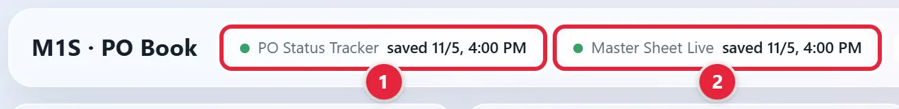
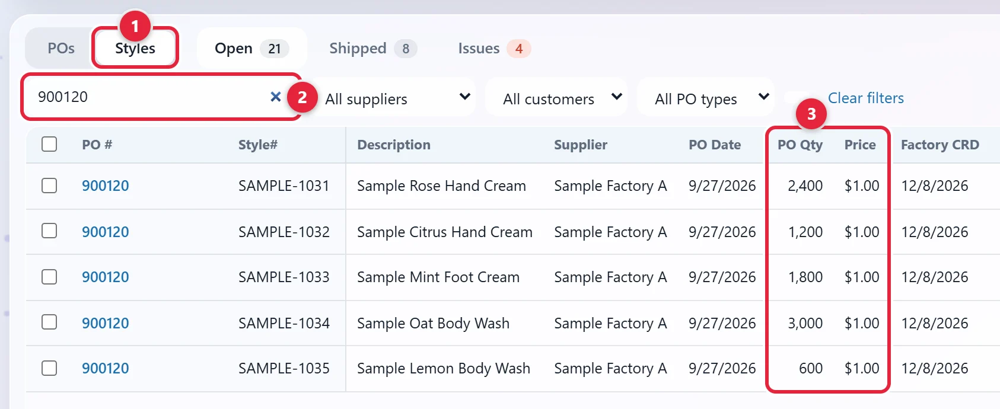

Check every factory invoice against what was ordered and what shipped, then get it approved and paid.
Draft. None of our tools covers this process, so these steps are general practice. Only PI Status and the look-ups in the PO Book come from our tools.
Jump to: Check the PI · Check the invoice · Pay the invoice · Rules
Have the invoice in front of you. You need its PO number. A PO is a purchase order: our order with the factory.
A PI (Proforma Invoice) is the factory's first version of the bill for a PO. It lists the goods and prices. It's signed before production.
Screenshots use made-up sample data. Click any picture to see it larger.
Click Open PO Book above. Sign in with your Metro1 Microsoft account if it asks.
It's the small rounded label, or chip, next to the M1S · PO Book title 1. Master Sheet Live 2 is a different file.

The Excel file opens in a new tab. If another tab is showing, click the PO Status Tracker tab at the bottom. You're only reading here. Production keeps this sheet up to date.
Press Ctrl+F and type the PO number from the invoice. It's in the PO# column. Each row is one style on one PO, so a PO can have several rows.
Find PI Status in the sheet's top row. If you can't see it, scroll right, or press Ctrl+F and type PI Status. Read it on each of the PO's rows.
| PO# | Style # | PI Status |
|---|---|---|
| 900120 | SAMPLE-1031 | Signed |
| 900120 | SAMPLE-1032 | Signed |
| 900120 | SAMPLE-1033 | Signed |
| 900120 | SAMPLE-1034 | Signed |
| 900120 | SAMPLE-1035 | Signed |
| 900121 | SAMPLE-1036 | Price Issue |
| 900122 | SAMPLE-1037 |
Find the signed copy for this PO. You'll match the invoice against it below. Saul to confirm where signed copies are kept. Until then, ask Saul.
Note these four things from the invoice:
Saul to confirm where to note them. Until then, ask Saul.
Go back to the PO Book tab. Click Styles at the top left of the table 1. Type the PO number in the search box 2. Read Style#, then PO Qty and Price 3. If you see Nothing matches these filters, or a style is missing, click the Shipped tab.

Compare them with the style, quantity and price on the invoice. Find a PO in the PO Book has more on this screen.
Compare the style, quantity and price on the invoice with the signed PI from Check the PI.
Compare the style, quantity and price on the invoice with the packing list. None of our tools holds the list itself. Saul to confirm where it is. Until then, ask Saul.
They settle it with the factory. Don't pay it until it's settled.
Saul to confirm who approves, how you pay and where the record goes (see the yellow Draft note at the top). Ask Saul before you do these steps.
Don't pay until it's approved.
Pay only when everything under Rules to remember is true.
Write down the payment date and the payment's reference number.
Saul to confirm where to keep it. Until then, ask Saul.
Pay an invoice only when all of these are true:
| You need | Where it is |
|---|---|
| PI Status | The PI Status column on the PO Status Tracker. Open it from the chip at the top of the PO Book. Production & PO Tracking shows the sheet's other columns. |
| A PO's styles, quantity and price | In the PO Book, click Styles. Then read PO #, Style#, PO Qty and Price. Find a PO shows how. |
| What has shipped from the factory | The Shipped tab of the PO Book. Order Tracking explains how to read it. |
| The packing list | None of our tools holds the file. The P.L/ C.I. column on the Container Tracking Sheet tracks it, with the commercial invoice. It's on the Open tab, or Complete once the round has closed. Saul to confirm where the file is. See Track documents and clearance. |
| The signed PI, invoices and payment records | None of our tools holds these. Saul to confirm where they are. |
| Value | What it means |
|---|---|
| Signed | The PI is signed. |
| Price Issue | The price isn't settled yet. |
| Blank or anything else | Don't pay yet, and ask Production what it means. The sheet has other values like these. Saul to confirm the full list. |